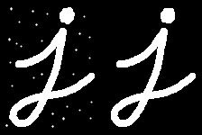
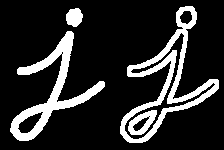

cv::MorphologyEx
开放(Opening)
开放只是侵蚀然后扩张的另一个名称。它对于消除噪音很有用。例：
cv::morphologyEx(img, img, MORPH_OPEN, getStructuringElement(MORPH_RECT, Size(9,9)));效果如下

原图 效果图
关闭(Closing)
关闭与开放相反，是膨胀然后侵蚀的另一个名称。对付图内部的小孔或小黑点时很有用。例：
cv::morphologyEx(img, img, MORPH_CLOSE, getStructuringElement(MORPH_RECT, Size(9,9)));效果如下
原图 效果图

形态梯度(Morphological Gradient)
这是图像的膨胀和腐蚀之间的相减。结果将看起来像对象的轮廓。
例：
cv::morphologyEx(img, img, MORPH_GRADIENT, getStructuringElement(MORPH_RECT, Size(9,9)));效果如下

原图 效果图
高顶帽(Top Hat)
这是输入图像和图像开放后之间的区别。下面的示例针对9x9内核完成。例：
cv::morphologyEx(img, img, MORPH_TOPHAT, getStructuringElement(MORPH_RECT, Size(9,9)));效果如下
原图 效果图

黑帽(Black Hat) 这是输入图像和输入图像关闭后之间的差异。
例：
cv::morphologyEx(img, img, MORPH_BLACKHAT, getStructuringElement(MORPH_RECT, Size(9,9)));效果如下
原图 效果图

结构元素
结构元素除了最基本的长方形以外，还有圆形和叉形的，可以根据所需选择使用。以下使用的是OpenCV Python接口，以方便了解getStructingElement所能给出的核心形状。# Rectangular Kernel
>>> cv2.getStructuringElement(cv2.MORPH_RECT,(5,5))
array([[1, 1, 1, 1, 1],
[1, 1, 1, 1, 1],
[1, 1, 1, 1, 1],
[1, 1, 1, 1, 1],
[1, 1, 1, 1, 1]], dtype=uint8)
# Elliptical Kernel
>>> cv2.getStructuringElement(cv2.MORPH_ELLIPSE,(5,5))
array([[0, 0, 1, 0, 0],
[1, 1, 1, 1, 1],
[1, 1, 1, 1, 1],
[1, 1, 1, 1, 1],
[0, 0, 1, 0, 0]], dtype=uint8)
# Cross-shaped Kernel
>>> cv2.getStructuringElement(cv2.MORPH_CROSS,(5,5))
array([[0, 0, 1, 0, 0],
[0, 0, 1, 0, 0],
[1, 1, 1, 1, 1],
[0, 0, 1, 0, 0],
[0, 0, 1, 0, 0]], dtype=uint8)
从上面可以看到，MORPH_RECT会给出一个长方形的核心，MORPH_ELLIPSE会给出一个(椭)圆的核心，而MORPH_CROSS会给出一个十字形的核心。